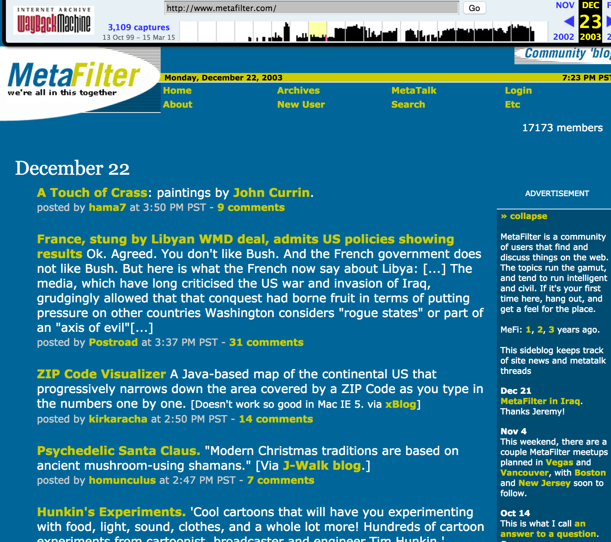

People Fucking Around On The Internet
by Hao Lian
2003


Our hero


A website
named MetaFilter

Middle school

MetaFilter
Matt Haughey

Matt Haughey
mathowie
History of MetaFilter
Founded in 1999
Post

Post

Post

Thread

Anything else?
Not ... really
Ask MetaFilter

People on MetaFilter
People who were on the internet everybody was on a 56.6kbps
People on MetaFilter
Yeah, those people
People on MetaFilter are...
...social liberals in the intersection of liberal arts and technology
People on MetaFilter are...
...nerds
Middle school
MetaFilter > middle school
MetaFilter > middle school > no school
MetaFilter > middle school > no school >= illiteracy
MetaFilter >= illiteracy
Speaking of illteracy...
YouTube comments
YouTube post

YouTube thread
(REDACTED)
Toxic community
*-ism, different languages, weird G+ integration, trolling
Toxic community
*-ism, different languages, weird G+ integration, trolling
But why?
Anonymity
Defined as: impossible to link content to author
Anonymity
Is difficult to achieve, and legally dicey, and lazy
Anonymity
Is MetaFilter anonymous?
Pseudoanonymity!
You can create many identities
Possible to recognize content by the same author
Pseudoanonymity!
is enough, but both YouTube and MetaFilter are pseudonymous
Thesis: size
More than anything, size serves to drive communities to become toxic.